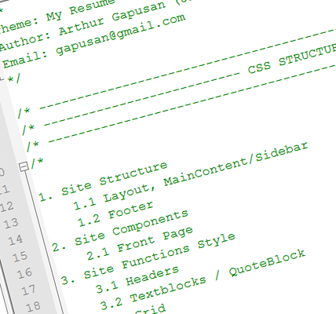
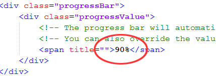
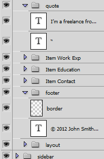
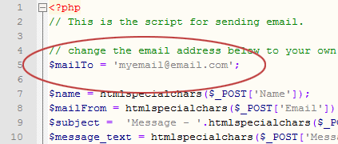

- Created: July 21, 2011
- By: Jimmyme
- Email: gapusan@gmail.com
Thank you for purchasing my theme. If you have any questions that are beyond the scope of this help file, please feel free to email via my user page contact form here. Thanks so much!
Table of Contents
A) About The Theme
This is a clean and simple résumé template, perfect for personal website to showcase personal information, skills, education and work experience. As of now, there are 4 color scheme (Blue, Green, Gray and Pink).
Each color scheme has 3 different layout. The default layout has a main content width of 600px with a sidebar, the second doesn't have a sidebar with the same content width of 600px, the last one has a content width of 780px with no sidebar also.
B) HTML Structure
This theme is a fixed layout with one sidebar. You can also choose 2 styles with no sidebar. All of the information within the main content area is nested within a div with an id of "content".
General Layout Structure with default slider:
- #container
- #bg-container
- .main
- .ribbon
- .content
- #front-info
- .textblock (intro)
- .item (Work Experience)
- .item (Education)
- .item (Personal and Contact Info)
- #footer
-
.Sidebar
- .main-photo
- .item (Technical Skills)
- .item (Testimonials)
- .main
- #bg-container
C) CSS Files and Structure
There are 4 css file for this template.
- reset.css - reset all style
- typography.css - typography styles
- style.css - main style
- prettyphoto.css - stylesheet of prettyphoto plugin
- print.css - stylesheet for print
NOTE: If you would like to edit a specific section of the site, simply find the appropriate label in the CSS file, and then scroll down until you find the appropriate style that needs to be edited. You may refer to the CSS table of content
NOTE: You may refer to the CSS Table of content (see image)

D) Changing the Skill Bar
To change the skill bar, simple change the value inside the span tag of the progressValue class.
(see image)

E) JavaScript
This theme imports 17 Javascript files. All located in the "js" folder.
- init.js - initialize all scripts
- init_form.js - used to initialized the contact form
- jquery-1.4.4.min.js - jquery script
- jquery.easing.1.3.js - easing script
- jquery.form.js - Used for the contact form
- jquery.bxSlider.min.js - Slider(fade) script for testimonials
- jquery.bjpos.js - Background animation script for the progress bar
- vtip.js - Tip script
- cufon-yui.js - cufon script
- DilleniaUPC_400.font.js - cufon font for Headers
- Orator_Std_400.font.js - cufon font
F) PSD Files
I've included only 4 PSDs for this package but only one PSD for the layout because it's pretty much the same for all layout from a design perspective.
- my_resume.psd - Main Template PSD (with sidebar)
- ribbon.psd - Ribbon PSD
- green_ribbon.psd - Ribbon PSD
- gray_ribbon.psd - Ribbon PSD
- pink_ribbon.psd - Ribbon PSD

G) Contact form Configuration
open sendemail.php located in the theme and change myemail@email.com to your email address.

H) Sources and Credits
I've used the following images, icons or other files as listed.
- Icons from Function and Komodomedia
- jQuery Bxslider
- jQuery PrettyPhoto Lightbox Alternative
- Cufon Font replacement
- Vertigo Tip
Once again, thank you so much for purchasing this theme. As I said at the beginning, I'd be glad to help you if you have any questions relating to this theme. No guarantees, but I'll do my best to assist. If you have a more general question relating to the themes on ThemeForest, you might consider visiting the forums and asking your question in the "Item Discussion" section.